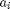
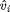
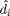
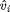
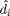

Contents
- Choose example set
- Calculate required binomial coefficients for
- Get exact values of u v and d in 'Standard Bernstein Basis'
- Calculate Degree of Approximate Greatest Common Divisor
- Preprocessor 01 - Calculating geometric means
- Preprocessor 2 and 3 - Obtaining initial alpha and theta
- Scale f and g using alpha and theta
- Obtain initial values of quotient polynomials u and v.
- Obtaining Values of Uk and Vk
- For output checking values of uk and vk
- Obtaining value for dk: the common divisor by Approximate Polynomial Factorisation
- Building Matrix Yk
- Initial Partial Derivatives
- START OF OUTPUTS AFTER REFINEMENT
- Calculating differences between divisor calculated (dc) and divosor exact (de)
- SECTION FOR REPORT PURPOSES PART 2.1
- %% SECTION FOR REPORT PURPOSES PART 2.2
- SECTION FOR REPORT PURPOSES PART 2.2
- Report Part THREE
- OUTPUT - Obtain maximum and minimum values of the matrix H*Bk+Ek*G*dstar
- Plotting Minimal residuals, minimal angles...
function [] = a1(example_number,ec,maxiterations)
% example_number : % ec : error level eg 1e-7 % maxiterations : max number of iterations of lse problem before exit % withQ : 1/0 - Where Q is diagonal of combinatorial factors % of u and v. DS(f,g)Q*[u;v] = 0 withQ=1; withG=1; addpath 'Core' addpath 'Measures' addpath 'Examples' %For Graphing Purposes FontSize = 15; LineWidth = 1.5; MarkerSize = 10; %For Saving Purposes dir = '..\..\..\CodeOutputs'; filenameA = 'Example'; filenameB = int2str(example_number); filenameD = ['_noise' int2str(log10(ec))] ;
Error using a1 (line 22) Not enough input arguments.
Choose example set
[f_roots g_roots d_roots degree_exact u_roots v_roots] =...
ReportExamples(example_number);
using roots stored as f and g and obtain polys in scaled bernstein basis B_poly returns coefficients \binom{m}{i} in a scaled bernstein basis. We deal with bernstein basis so wish to remove the (mchoosei) such that we have only which is the coefficient in the Bersntein Basis.. fx_exact_bi = \hat{a}_{i} binom{m}{i} gx_exact_bi = \hat{b}_{i} binom{n}{i}
fx_exact_bi = B_poly(f_roots); %fx_bi is of form :- $a_{i}$ (m choose i) gx_exact_bi = B_poly(g_roots); %gx_bi is of form :- bi (n choose i) %Get the degree m of f, and degree n of g m=length(fx_exact_bi) - 1; n=length(gx_exact_bi) - 1; minimum_degree = min(m,n); %Initialise some useful vectors of length m, m-k, n, n-k and k vecm = 0:1:m; vecmk = 0:1:m-degree_exact; vecn = 0:1:n; vecnk = 0:1:n-degree_exact; veck=0:1:degree_exact;
Calculate required binomial coefficients for
f - Binomial coefficients stored as Bi_m g - Binomial coefficients stored as Bi_n u - Binomial coefficients stored as Bi_mk v - Binomial coefficients stored as Bi_nk d - Binomial coefficients stored as Bi_k Bi_m = binom{m}{0}, binom{m}{1}, ... , binom{m}{m} Bi_n = binom{n}{0}, binom{n}{1}, ... , binom{n}{n} Bi_nk = binom{n-k}{0}, binom{n-k}{1}, ... , binom{n-k}{n-k} Bi_mk = binom{m-k}{0}, binom{m-k}{1}, ... , binom{m-k}{m-k} Bi_k = binom{k}{0}, binom{k}{1}, ... , binom{k}{k}
Bi_m = zeros(1,m+1);
Bi_n = zeros(1,n+1);
Bi_nk= zeros(1,n-degree_exact+1);
Bi_mk= zeros(1,m-degree_exact+1);
Bi_k = zeros(1,degree_exact+1);
for i=1:1:m+1
Bi_m(i) = nchoosek(m,i-1);
end
for i=1:1:n+1
Bi_n(i) = nchoosek(n,i-1);
end
for i=1:1:n-degree_exact+1
Bi_nk(i) = nchoosek(n-degree_exact,i-1);
end
for i=1:1:m-degree_exact+1
Bi_mk(i) = nchoosek(m-degree_exact,i-1);
end
for i=1:1:degree_exact+1
Bi_k(i) = nchoosek(degree_exact,i-1);
end
Get exact values of u v and d in 'Standard Bernstein Basis'
for purposes of comparing outputs. Note that these values are only used to compare to computed values. u_bi_exact =  binom{m-k}{i} u_bb_exact = v_bi_exact =  binom{n-k}{i} v_bb_exact = d_bi_exact =  binom{k}{i} d_bb_exact =
binom{m-k}{i} u_bb_exact = v_bi_exact =  binom{n-k}{i} v_bb_exact = d_bi_exact =  binom{k}{i} d_bb_exact =
uk_bi_exact = B_poly(u_roots);
uk_exact = uk_bi_exact./Bi_mk;
vk_bi_exact = B_poly(v_roots);
vk_exact = vk_bi_exact./Bi_nk;
dk_bi_exact = B_poly(d_roots);
dk_exact = dk_bi_exact./Bi_k;
Coefficients in 'Standard Bernstein Basis' fx_exact has coefficients of the form : \hat{a}_{i} gx_exact has coefficients of the form : \hat{b}_{i}
fx_exact = fx_exact_bi./Bi_m;
gx_exact = gx_exact_bi./Bi_n;
% Add componentwise noise to coefficients of polynomials in 'Standard Bernstein Basis'.
% fx = \hat{a}_{i} + delta\hat{a}_{i} == a_{i}
% gx = \hat{b}_{i} + delta\hat{b}_{i} == b_{i}
fx = Noise(fx_exact,ec,24);
gx = Noise(gx_exact,ec,22);
% Now obtain coefficients of Polynomials In 'Scaled Bernstein Basis', which
% are also noisy fx_bi = ai(mchoosei), gx_bi = bi(nchoosei)
%fx_bi = fx.*Bi_m;
%gx_bi = gx.*Bi_n;
Calculate Degree of Approximate Greatest Common Divisor
[degree_calc] = GetDegree(fx,gx,degree_exact,ec, example_number);
Build the Diagonal H^{-1} H^{-1}[c(uk)c(vk)]Q_{k}
H1 = diag(1./Bi_m);
H2 = diag(1./Bi_n);
H = diag(1./[Bi_m Bi_n]);
Preprocessor 01 - Calculating geometric means
Based on occurences of elements of f and g in the sylvester subresultant Dk^{-1}S(f,g)Qk
gm_f = GM4(fx,n,degree_exact);
gm_g = GM4(gx,m,degree_exact);
% Normalise fx -> fx_n
% fx_n = \bar{a}_{i}
% gx_n = \bar{b}_{i}
fx_n = fx./gm_f;
gx_n = gx./gm_g;
% Normalised fx with binomials
% fx_n_bi = \bar{a}_{i} binom{m}{i}
% gx_n_bi = \bar{b}_{i} binom{n}{i}
%fx_n_bi = fx_n.*Bi_m;
%gx_n_bi = gx_n.*Bi_n;
Preprocessor 2 and 3 - Obtaining initial alpha and theta
for subresultant k where k is the degree of the AGCD
[alpha_opt,theta_opt] = OptimalAlphaAndTheta(fx_n,gx_n,degree_exact,withQ);
Scale f and g using alpha and theta
fw_n = \bar{a}_{i} \theta^{i} gw_n = \bar{b}_{i} \theta^{i} fw_n_bi = \bar{a}_{i} \theta^{i} \binom{m}{i} gw_n_bi = \bar{b}_{i} \theta^{i} \binom{n}{i}
fw_n = fx_n.*theta_opt.^(vecm);
gw_n = gx_n.*theta_opt.^(vecn);
%fw_n_bi = fx_n_bi.*theta_opt.^(vecm);
%gw_n_bi = gx_n_bi.*theta_opt.^(vecn);
Obtain initial values of quotient polynomials u and v.
For all columns in Sk(f,g) (where k is degree of gcd) remove column and find residual sk(f,g)[v,-u]. Find minimum residual and use column index, to calculate values of uk and vk
%Build the initial subresultant - all columns included Sk = Subresultant(fw_n,alpha_opt * gw_n,degree_exact,withQ); %For each column index. remove column from Sk and calculate residual, %minimal angle, condition number and svd as methods for obtaining optimal %column [residual, angle, con_number_k, smallest_singular_k] = GetVectors(Sk); % Find column which gives minimal residual, angle, condition number and % singular value. [col1] = find( residual == min(min(residual))); [col2] = find( angle == min(min(angle))); [col3] = find( con_number_k == min(min(con_number_k))); [col4] = find( smallest_singular_k == max(max(smallest_singular_k))); col = mode([col1 col2 col3 col4]); display('############################################################') display(' Optimal Column ') display('By Resiudual | By Angle | By Condition | By Singular Value') display([col1 col2 col3 col4]) display('############################################################') [Aki cki] = RemoveSubresultantColumn(Sk,col); SNTLN(fw_n,alpha_opt * gw_n,degree_calc,col) % cols = [col1 col2 col3 col4] % Replace the coefficient in the ith position with 1. Where ith position % corresponds to the index 'col'. % Method uses qr decomposition, but could use pseudoinverse. x = A^{-1}b [~,n2] = size(Aki); [Q,R] = qr(Aki); R1 = R(1:n2,:); cd = Q'*cki; c = cd(1:n2,:); x_ls = R1\c; vecx =[ x_ls(1:(col)-1); -1; x_ls(col:end); ];
Obtaining Values of Uk and Vk
uk = u_{k,i} \theta^{i} vk = v_{k,i} \theta^{i} uk_bi = u{k,i} \theta^{i} binom{m-k}{i} vk_bi = v_{k,i} \theta^{i} binom{n-k}{i}
switch withQ case 1 % Sk = DTQ so vk uk without nchoose i vk = vecx(1:n-degree_exact+1); uk = -vecx(n-degree_exact+2:end); vk_bi = vecx(1:n-degree_exact+1).* Bi_nk'; % vki = vki*theta^i * (nchoosei) uk_bi = -vecx(n-degree_exact+2:end) .* Bi_mk'; %uki = uki * theta^i * (nchoosei) case 0 % Sk = DT so vk uk contain nchoosei vk = vecx(1:n-degree_exact+1) ./ Bi_nk'; uk = vecx(n-degree_exact+2:end) ./ Bi_mk'; vk_bi = vecx(1:n-degree_exact+1); % vki = vki*theta^i * (nchoosei) uk_bi = -vecx(n-degree_exact+2:end); %uki = uki * theta^i * (nchoosei) end % Output condition numbers involved in calculating vk and uk display('############################################################'); display('Conditions when calculating [uk vk]') display('Condition Aki = '); cond(Aki) display('############################################################');
For output checking values of uk and vk
display('############################################################') display('Comparing vk and vk_calc'); vk_calc_output = vk ./( theta_opt.^(vecnk))'; vk_calc_output = vk_calc_output./vk_calc_output(1); vk_exact_output = vk_exact./ vk_exact(1); v = [vk_exact_output' vk_calc_output] norm_vk = norm(vk_exact_output' - vk_calc_output)/norm(vk_exact) display('#########################################'); display('Comparing uk and uk_calc') uk_calc_output = uk ./( theta_opt.^(vecmk))'; uk_calc_output = uk_calc_output./uk_calc_output(1); uk_exact_output = uk_exact./uk_exact(1); u = [uk_exact_output' uk_calc_output] norm_uk = norm(uk_exact_output' - uk_calc_output)/norm(uk_exact) display('#########################################')
Obtaining value for dk: the common divisor by Approximate Polynomial Factorisation
%H^{-1}[ C(uk) C(vk)]G d* = [f;g] %Build Toeplitz Matrices of uk, vk including binomial coefficients C1 = Cauchy(uk_bi,degree_exact); C2 = Cauchy(vk_bi,degree_exact); C = [C1 ; C2]; %Build the RHS Vector of f and g, not including binomial coefficients bk = [fw_n,alpha_opt.*gw_n].'; %If working with G - set G to combinatorial factors of d* %Else set G to identity matrix switch withG % where Gd* = dk case 1 G = diag(Bi_k); case 0 G = eye(length(Bi_k)); end %Calculate d* by psuedo inverse, note if excluding G, d* includes combinatorial factors. A = H*C*G; [~,n2] = size(A); [Q,R] = qr(A); R1 = R(1:n2,:); cd = Q'*bk; c = cd(1:n2,:); x_ls = R1\c; dstar = x_ls; dk = G*dstar; % Calculate the associated residual rk = bk-((H*C*G)*dstar); % OUTPUTS display('#############################################################') display('Coniditon Numbers in finding dk with and without G') condition_H = cond(H); condition_C = cond(C); condition_G = cond(G); condition_HC = cond(H*C) condition_HCG = cond(H*C*G) display('#############################################################') di = dstar./(theta_opt.^(veck)).'; % di = d(initial) used later
Building Matrix Yk
recall H Yk zk = H Ek rk
ok1 = theta_opt.^(vecmk);
ok2 = theta_opt.^(vecnk);
Yk = BuildYk(ok1,ok2,G,dstar,m,n,degree_exact);
Initialise S - Matrix such that sk = S * pt Initialise T - Matrix such that tk = T * qt
S = diag(theta_opt.^vecm);
T = diag(theta_opt.^vecn);
% Initialise zk - Structured perturbations of u and v
zk = zeros(m+n-2*degree_exact+2,1);
Initial Partial Derivatives
partial_f = vecm .*fx_n .*theta_opt.^(vecm-1);
partial_g = vecn .*gx_n .*theta_opt.^(vecn-1);
lk = dstar./(theta_opt.^veck');
partial_dstar=veck'.*dstar./theta_opt;
partial_uk = vecmk .*uk_bi' ./theta_opt;
partial_vk = vecnk .*vk_bi' ./theta_opt;
partial_C1=Cauchy(partial_uk,degree_exact);
partial_C2=Cauchy(partial_vk,degree_exact);
% Initialise variables
gnew=rk; % the initial value of the right hand side vector
beta(1)=0; % Initial value of beta
theta(1)=theta_opt; %Initial optimised value of theta
pk=zeros(m+1,1);
qk=zeros(n+1,1);
Construct the coefficient matrix in the equation that defines the constraint for the LSE problem.
C_temp=[(-1)*S,... zeros(m+1,n+1),... zeros(m+1,1), ... -partial_f.'+... (H1*partial_C1*G*dstar)+... (H1*C1*G*partial_dstar); zeros(n+1,m+1),... -alpha_opt*T,... -gw_n.',... (- alpha_opt*partial_g.')+... (H2*partial_C2*G*dstar)+... (H2*C2*G*partial_dstar)]; C=[H*Yk,C_temp]; condition_intial_C_LSE = cond(C) % The initial value of the right hand side vector in the equation % that defines the approximate polynomial factorisation. ek=bk; E=eye(2*m+2*n-2*degree_exact+6); fnew=zeros(2*m+2*n-2*degree_exact+6,1); ite=1; u2 = uk_bi./theta(1).^vecmk' ; % [.. uki (m-k)choosei..] v2 = vk_bi./theta(1).^vecnk' ; % [.. vki (n-k)choosei..] % Start the iterative procedure for the solution of the LSE problem. while (norm(rk)/norm(ek) >=1e-15) || (ite == 1) % The iterative procedure must be performed at least once, and % thus the statement ite == 1 is included. ite=ite+1; if ite>maxiterations % break if more than 50 iterations are required break; end % Use the QR decomposition to solve the LSE problem. y=LSE(E,fnew,C,gnew); [delta_zk, delta_pk, delta_qk, delta_beta, delta_theta] =... GetVarFromLSE(y,m,n,degree_exact); % Update variables zk, pk, qk, beta, theta zk = zk+delta_zk; pk = pk+delta_pk; qk = qk+delta_qk; beta(ite) = beta(ite-1)+delta_beta; theta(ite) = theta(ite-1)+delta_theta; %update the iterative value of f and g fw2=fx_n.*(theta(ite).^vecm); gw2=gx_n.*(theta(ite).^vecn); %update matrices S and T S = diag(theta(ite).^vecm); T = diag(theta(ite).^vecn); %Update vectors of thetas ok1=theta(ite).^vecmk; ok2=theta(ite).^vecnk; % update dstar dstar = lk.*(theta(ite).^veck'); % Update the matrices Bk, Ek and Yk. C1=Cauchy(u2.*ok1',degree_exact); C2=Cauchy(v2.*ok2',degree_exact); B=[C1;C2]; E1=Cauchy(zk(1:m-degree_exact+1).*ok1',degree_exact); E2=Cauchy(zk(m-degree_exact+2:m+n-2*degree_exact+2).*ok2',degree_exact); Ek=[E1;E2]; Y = BuildYk(ok1,ok2,G,dstar,m,n,degree_exact); sk=pk.*(theta(ite).^vecm'); tk=qk.*(theta(ite).^vecn'); % Calculate partial derivatives wrt theta partial_sk=vecm'.*pk.*theta(ite).^(vecm-1)'; partial_tk=vecn'.*qk.*theta(ite).^(vecn-1)'; partial_f=vecm.*fx_n.*(theta(ite).^(vecm-1)); partial_g=vecn.*gx_n.*(theta(ite).^(vecn-1)); partial_C1=Cauchy(vecmk'.*u2.*ok1'./theta(ite),degree_exact); partial_C2=Cauchy(vecnk'.*v2.*ok2'./theta(ite),degree_exact); partial_E1=Cauchy(vecmk'.*zk(1:m-degree_exact+1).*ok1'/theta(ite),degree_exact); partial_E2=Cauchy(vecnk'.*zk(m-degree_exact+2:m+n-2*degree_exact+2).*ok2'/... theta(ite),degree_exact); partial_dstar= veck'.*lk.*(theta(ite).^(veck-1))'; C_temp=[(-1)*S,... zeros(m+1,n+1),... zeros(m+1,1),... -(partial_f'+partial_sk)+... ((H1*partial_C1*G)*dstar)+... ((H1*partial_E1*G)*dstar)+... ((H1*C1*G)*partial_dstar)+... ((H1*E1*G)*partial_dstar); zeros(n+1,m+1),... -(alpha_opt+beta(ite))*T,... -gw2.'-tk,... -(alpha_opt+beta(ite))*(partial_g.'+partial_tk)+... ((H2*partial_C2*G)*dstar)+... ((H2*partial_E2*G)*dstar)+((H2*C2*G)*partial_dstar)+... ((H2*E2*G)*partial_dstar)]; C=[H*Y,C_temp]; Condition_C_LSE = cond(C); % Calculate the residual and update gnew. rk=[fw2.'+sk;(alpha_opt+beta(ite))*(gw2.'+tk)]-((H*(B+Ek)*G)*dstar); gnew=rk; % Update the vector fnew in the LSE problem % and ek, the right hand side vector in the equation that is % solved iteratively. fnew=-[zk; pk; qk; beta(ite); theta(ite)-theta_opt]; ek=[fw2.'+sk; (alpha_opt+beta(ite)).*(gw2.'+tk)]; res(ite)=norm(rk)/norm(ek); end
START OF OUTPUTS AFTER REFINEMENT
res=norm(rk)/norm(ek);
minim(degree_exact)=norm(E*y-fnew); % the value of ||E*y-f||
Condition_Coefficient_Matrix = cond(H*(B+Ek)*G);
Condition_C = cond(C);
iterationsRequired = ite;
Calculating differences between divisor calculated (dc) and divosor exact (de)
%SECTION FOR REPORT PURPOSES format short de = (dk_exact./dk_exact(1)).'; de = (de./norm(de)); dc = G*dstar; dc = dc./(Bi_k.'); try dc = dc./(theta(ite).^veck).'; catch dc = dc./(theta(ite-1).^veck).' end dc = dc./dc(1); dc = dc./norm(dc); norm_m1 = ((de-dc)./de); norm_m1 = norm(norm_m1); di_n = di./di(1); di_n = di_n./norm(di_n); display('###################################'); display('D_Exact D_Calc D_initial') results = [de dc di_n] delta = (de-dk)./de; theta = theta;
SECTION FOR REPORT PURPOSES PART 2.1
Calculate the error in vk, before refinement which is used in calculating the initial value of dk
%Prepare vkexact vkexact = vk_exact; vkexact_noisy = Noise(vkexact,ec,21); %Divide by leading coefficients. vkexact_noisy = vkexact_noisy./vkexact_noisy(1); vkexact = vkexact./vkexact(1); %Normalise vkexact_noisy = vkexact_noisy./norm(vkexact_noisy); vkexact = vkexact./norm(vkexact); %Prepare vk computed - the initial value of vk vkcomp = vk./(theta_opt.^vecnk)'; vkcomp = vkcomp./vkcomp(1); vkcomp = vkcomp./norm(vkcomp); %Prepare vk computed post iteration such that perturbations are included vkcomp_ite = v2 + zk(m-degree_exact+2:m+n-2*degree_exact+2); vkcomp_ite = vkcomp_ite./Bi_nk'; vkcomp_ite = vkcomp_ite./vkcomp_ite(1); vkcomp_ite = vkcomp_ite./norm(vkcomp_ite); %Get Componentwise Errors Componentwise_Error_Exact_vk = abs(vkexact_noisy - vkexact) ./abs(vkexact); Componentwise_Error_Computed_vk = abs(vkcomp' - vkexact)./abs(vkexact); Componentwise_Error_Computed_vk_ite = abs(vkcomp_ite' - vkexact) ./abs(vkexact); %Plot Graphs ya1 = log10(Componentwise_Error_Computed_vk)'; yb1 = log10(Componentwise_Error_Exact_vk)'; yc1 = log10(Componentwise_Error_Computed_vk_ite)'; figure(110) x = 1:1:length(Componentwise_Error_Computed_vk); plot(x,ya1,'-r+','LineWidth',LineWidth,'MarkerFaceColor','Red','MarkerSize',MarkerSize) hold on plot(x,yb1,'-bx','LineWidth',LineWidth,'MarkerFaceColor','Blue','MarkerSize',MarkerSize) plot(x,yc1,'-gx','LineWidth',LineWidth,'MarkerFaceColor','Green','MarkerSize',MarkerSize) hold off ylabel('log_{10} Componenetwise Error','FontSize',FontSize); xlabel('Index d_{i}','FontSize',FontSize); hleg = legend('Componentwise Error of Computed vk',... 'Componentwise Error of exact vk',... 'Componentwise Error Computed Vk Post Iterations'); axis([1,length(Componentwise_Error_Computed_vk),-inf,inf]); average_difference_vk = norm(log10(Componentwise_Error_Computed_vk / Componentwise_Error_Exact_vk)) %Save Outputs filenameB = int2str(example_number); filenameC = '_ComponenetwiseErrorAnalysis_vk'; filenameD = ['_noise' int2str(log10(ec))]; filename = [filenameA filenameB filenameC filenameD]; file = fullfile(dir,filename); Save(figure(111),file);
%% SECTION FOR REPORT PURPOSES PART 2.2
Calculate the error in uk, before refinement
ukexact = uk_exact;
ukexact_noisy = Noise(ukexact,ec,24);
% Divide Noisy and nonnoisy by leading coefficient.
ukexact_noisy = ukexact_noisy./ukexact_noisy(1);
ukexact = ukexact./ukexact(1);
% Normalise
ukexact_noisy = ukexact_noisy./norm(ukexact_noisy);
ukexact = ukexact./norm(ukexact);
% Prepare uk computed
ukcomp = uk./theta_opt.^vecmk';
ukcomp = ukcomp./ukcomp(1);
ukcomp = (ukcomp./norm(ukcomp))';
% Prepare uk computed post iteration such that perturbations are included
ukcomp_ite = u2 + zk(1:m-degree_exact+1);
ukcomp_ite = ukcomp_ite./Bi_mk';
ukcomp_ite = ukcomp_ite./ukcomp_ite(1);
ukcomp_ite = ukcomp_ite./norm(ukcomp_ite);
% Obtain Componentwise Errors
Componentwise_Error_Exact_uk = abs(ukexact_noisy - ukexact) ./abs(ukexact);
Componentwise_Error_Computed_uk = abs(ukcomp - ukexact)./abs(ukexact);
Componentwise_Error_Computed_uk_ite = abs(ukcomp_ite' - ukexact)./abs(ukexact);
%Plot the Results
ya2 = log10(Componentwise_Error_Computed_uk)';
yb2 = log10(Componentwise_Error_Exact_uk)';
yc3 = log10(Componentwise_Error_Computed_uk_ite)';
figure(111)
x = 1:1:length(Componentwise_Error_Computed_uk);
plot(x,ya2,'-r+','LineWidth',LineWidth,'MarkerFaceColor','Red','MarkerSize',MarkerSize)
hold on
plot(x,yb2,'-bx','LineWidth',LineWidth,'MarkerFaceColor','Blue','MarkerSize',MarkerSize)
plot(x,yc3,'-gx','LineWidth',LineWidth,'MarkerFaceColor','Green','MarkerSize',MarkerSize)
hold off
ylabel('log_{10} Componenetwise Error','FontSize',FontSize);
xlabel('Index d_{i}','FontSize',FontSize);
hleg = legend('Componentwise Error of Computed uk',...
'Componentwise Error of exact uk',...
'Componentwise Error of computer uk Post Iterations');
axis([1,length(Componentwise_Error_Computed_uk),-inf,inf]);
average_difference_uk = norm(log10(Componentwise_Error_Computed_uk / Componentwise_Error_Exact_uk))
%Saving Outputs
filenameC = '_ComponenetwiseErrorAnalysis_uk';
filename = [filenameA filenameB filenameC filenameD];
file = fullfile(dir,filename);
Save(figure(111),file);
SECTION FOR REPORT PURPOSES PART 2.2
%Take d in bern basis, add noise to coefficients dexact = dk_exact; dexact_noisy = Noise(dexact,ec,24); %Divide NOISY and NON-NOISY dexact by leading coefficient dexact_noisy = dexact_noisy./dexact_noisy(1); dexact = dexact./dexact(1); %Normalise dexact = dexact/norm(dexact); dexact_noisy = dexact_noisy/norm(dexact_noisy); %dcomp = d_first_approximation./(Bi_k'); dcomp = (G*dstar./(Bi_k.'))'; dcomp = dcomp./theta(ite).^veck; dcomp = dcomp./dcomp(1); dcomp = (dcomp/norm(dcomp)); %Componentwise Error of exact Componentwise_Error_Exact_dk = abs(dexact_noisy - dexact) ./abs(dexact); Componentwise_Error_Computed_dk = abs(dexact - dcomp)./abs(dexact); % Plot Graph ya3 = log10(Componentwise_Error_Computed_dk)'; yb3 = log10(Componentwise_Error_Exact_dk)'; figure(112) x = 1:1:length(Componentwise_Error_Computed_dk); plot(x,ya3,'-r+','LineWidth',LineWidth,'MarkerFaceColor','Red','MarkerSize',MarkerSize) hold on plot(x,yb3,'-bx','LineWidth',LineWidth,'MarkerFaceColor','Blue','MarkerSize',MarkerSize) hold off ylabel('log_{10} Componenetwise Error','FontSize',FontSize); xlabel('Index d_{i}','FontSize',FontSize); hleg = legend('Componentwise Error of Computed divisor',... 'Componentwise Error of Exact Divisor'); axis([1,length(Componentwise_Error_Computed_dk),-inf,inf]); average_difference_dk = norm(log10(Componentwise_Error_Computed_dk / Componentwise_Error_Exact_dk)) % Save Outputs filenameC = '_ComponenetwiseErrorAnalysis'; filename = [filenameA filenameB filenameC filenameD]; file = fullfile(dir,filename); Save(figure(112),file);
Report Part THREE
%BUILD THE Sylvester Matrix of (S(f,g) noisy and S(F+s,G+t)) and compare SVDs f_new = fw2.'+sk; g_new = (alpha_opt+beta(ite)).*(gw2.'+tk); f_new_bi = f_new.*Bi_m'; g_new_bi = g_new.*Bi_n'; %Let Y_1 be a vector of singular values ofD^{-1}*S(f,g)*Q where f and g %are noisy coefficients before any normalization, preprocessing or %refinement % S_noisy = Subresultant(fx,gx,1,withQ); [~, Y_1, ~] = svd(S_noisy); y1 = diag(Y_1); y1 = log10(y1./y1(1)); %Let y2 be a vector of singular values of D^{-1}*S(f,g)*Q where f and g %are noisy coefficients after preprocessing operations S_afterPreProc = Subresultant(fw_n,alpha_opt * gw_n,1,withQ); [~, Y_2, ~] = svd(S_afterPreProc); y2 = diag(Y_2); y2 = log10(y2./y2(1)); %Let y2 be a vector of singular values of D^{-1}*S(f,g)*Q where f and g %are the noisy coefficients after preprocessing operations and %refinement where f = f+s and g = g+t S_afterRefinement = Subresultant(f_new,g_new,1,withQ); [~, Y_3, ~] = svd(S_afterRefinement); y3 = diag(Y_3); y3 = log10(y3./y3(1)); %Plot the Graph figure(9) [x1,~] = size(y1); rank = x1 - degree_exact; x = 1:1:x1; plot(x,y1,'--go','LineWidth',LineWidth,'MarkerFaceColor','Green','MarkerSize',MarkerSize) hold on plot(x,y2,'-r+','LineWidth',LineWidth,'MarkerFaceColor','Red','MarkerSize',MarkerSize) plot(x,y3,'-bx','LineWidth',LineWidth,'MarkerFaceColor','Blue','MarkerSize',MarkerSize) plot(rank,y1(rank),'rs','MarkerFaceColor','Black','MarkerSize',MarkerSize) plot(rank,y2(rank),'rs','MarkerFaceColor','Black','MarkerSize',MarkerSize) plot(rank,y3(rank),'rs','MarkerFaceColor','Black','MarkerSize',MarkerSize) hold off axis([1,x1,-inf,inf]) ylabel('log_{10} Singular Values \sigma_{i}/\sigma_{1}','FontSize' ,FontSize); xlabel('Index of Singular Values \sigma_{i}','FontSize',FontSize); hleg = legend('Before Refinement or preproc',... 'Before Refinement post preproc','After Refinement'); % Save Outputs filenameC = '_SingularValueDecomposition_Noisy_Preprocessed_Refined'; filename = [filenameA filenameB filenameC filenameD]; file = fullfile(dir,filename); Save(figure(9),file);
OUTPUT - Obtain maximum and minimum values of the matrix H*Bk+Ek*G*dstar
[maximum,minimum] = getElems(H,B,Ek,G);
Plotting Minimal residuals, minimal angles...
rmpath 'Core' rmpath 'Measures'
end function [maximum, minimum] = getElems(H,B,Ek,G) %Note when wout G = G is set to identity C1 = abs(H*(B+Ek)*G); maximum = max(C1(:)); minimum = min(nonzeros(C1(:))); end function [delta_zk, delta_pk, delta_qk, delta_beta, delta_theta] =... GetVarFromLSE(y,m,n,degree_exact) % Retrieve the variables that make up the vector y. delta_zk=y(1:m+n-2*degree_exact+2); delta_pk=y(m+n-2*degree_exact+3:2*m+n-2*degree_exact+3); delta_qk=y(2*m+n-2*degree_exact+4:2*m+2*n-2*degree_exact+4); delta_beta=y(end-1); delta_theta=y(end); end function Yk = BuildYk(ok1, ok2, G, dstar, m, n, degree_exact) % vecmk : [m-k, m-k-1, ... 1, 0] % vecnk : [n-k, n-k-1, ... 1, 0] % G : Diagonal of binom coeff of dk % dstar : Coefficients of dk excl Diagonals % m : degree of poly f % n : degree of poly g C3 = Cauchy(G*dstar,m-degree_exact); C4 = Cauchy(G*dstar,n-degree_exact); Y1 = C3 * diag(ok1); Y2 = C4 * diag(ok2); Y3 = zeros(m+1,n+1-degree_exact); Y4 = zeros(n+1,m+1-degree_exact); Yk = [Y1 Y3; Y4 Y2]; end